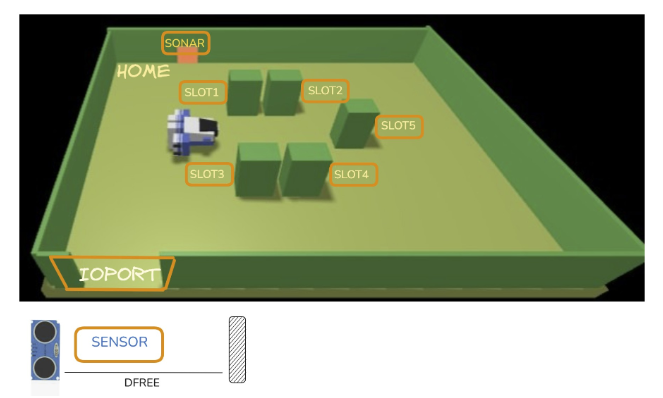

Goal Sprint3: Progettare e realizzare il sottosistema telemetrico sonar e l'attuatore led, integrando il firmware su microcontrollore o nodo dedicato. Completare la gestione delle anomalie telemetriche con transizione nello stato Out of service a display e gestire la segnalazione luminosa nelle diverse fasi operative.
A Maritime Cargo shipping company (from now on, simply company) intends to automate the operations of load of containers in the ship’s cargo hold (or simply hold). To this end, the company plans to employ a Differential Drive Robot (from now, called cargorobot).
The hold is a rectangular, flat area with an Input/Output port (IOPort). The area provides 4 slots to store the
containers and a slot named slot5.

In the picture above:
D < DFREE/2, during a reasonable time (e.g. 3 secs).
The company asks us to build service named cargoservice that should work as follows.
The cargoservice is able to receive a request to load a container sent by some customer by using the pushbutton of the IOPort.
retrylater, if the IOPort is currently occupied by a container or if the system is Out of service
slots1-4 are already occupied.
When the request to load is accepted, the customer must move the container in the sensor area within prefixed amount of time (e.g. 30 secs), otherwise the systems becomes disengaged. Then, the cargoservice uses the cargorobot to move the container from the IOPort to the slot5 (for marking the container) and then to the reserved slot.
The service must also show on the display on the IOPort:
D > DFREE for at least 3 secs (perhaps a
failure of the sonar).
L'analisi dei requisiti è stata svolta nello Sprint0.
Il dispositivo fisico preposto al campionamento dello spazio antistante l'IOPort è un microcontrollore Raspberry PicoW dotato di un sensore a ultrasuoni HC-SR04. Il PicoW esegue un runtime leggero MicroPython e dispone di risorse computazionali e stack di rete limitati: non è in grado di eseguire l'infrastruttura JVM né di istanziare il runtime degli attori QAk. Non è concepibile accoppiare direttamente la logica centrale di cargoservice con le letture grezze del microcontrollore:
Si conferma la scelta architetturale delineata nello Sprint 0: introdurre un attore software dedicato, sonar (QActor in ctxcargoservice),
avente il ruolo di Adapter tecnologico e filtro semantico. L'attore sonar aggrega il flusso di campionamento grezzo proveniente dal PicoW, applica la logica dei filtri temporali e notifica a cargoservice e ioport solo le transizioni di stato confermate.
Il microcontrollore PicoW deve comunicare la distanza D all'attore sonar e ricevere dal sistema il comando di attivazione del LED. Analizziamo le alternative per questo canale eterogeneo:
| Alternativa | Caratteristiche e Vantaggi | Limiti e Criticità | Valutazione |
|---|---|---|---|
| Seriale su USB/UART | Nessun componente middleware aggiuntivo; comunicazione punto-a-punto a bassissima latenza. | Impone un vincolo fisico: il microcontrollore deve essere collegato via cavo USB alla stessa macchina che ospita il processo JVM di sonar. |
Scartata: vanifica la natura distribuita e autonoma del nodo sensore. |
| Socket TCP grezzo | Connessione diretta via WiFi tra PicoW e porta TCP dedicata su JVM. | Richiede la gestione manuale del server socket su Java/Kotlin, la riconnessione automatica in caso di drop del WiFi e la definizione di un protocollo applicativo custom. | Scartata: eccessivo codice infrastrutturale a basso livello. |
| Broker MQTT (WiFi) | Disaccoppiamento spaziale completo: il PicoW trasmette via WiFi a un broker MQTT. Supporta nativamente la bidirezionalità tramite topic distinti (mqttsonarTF26 e mqttledTF26). |
Richiede la presenza di un broker MQTT (es. Eclipse Mosquitto) nella rete locale. | Adottata: garantisce flessibilità di rete e massima interoperabilità senza vincoli di cablaggio. |
Scelto MQTT come canale di trasporto, si presentano due modalità per far interagire il broker con l'attore sonar:
mqttBroker "IP_BROKER" : 1883 eventTopic "mqttsonarTF26"
In questo modo, qualsiasi evento pubblicato su tale topic nel formato standard msg(...) viene intercettato direttamente dal runtime QAk e consegnato come Event sonarreading : sonarreading(D) a chiunque possieda una transizione whenEvent sonarreading.
I requisiti impongono il rispetto di due soglie geometrico-temporali:
Una frequenza elevata (es. 10 Hz / 100 ms) genererebbe un traffico di rete inutile sul broker MQTT e introdurrebbe rumore sui micro-rimbalzi degli ultrasuoni, senza apportare vantaggi significativi a fronte di una finestra di filtro ampia di 3 secondi.
Una frequenza di 1 lettura al secondo (1 Hz) garantisce circa 3 campioni consecutivi all'interno della finestra di convalida, sufficienti a scongiurare falsi positivi (dovuti a passaggi transitori di operatori o errori isolati di eco) preservando la reattività del sistema e riducendo al minimo il sovraccarico di rete.
Il Pico campiona ogni 200 ms, pubblica la mediana delle ultime misure una volta al secondo, e se non rileva nessun eco invia 400 cm, che il sonar interpreta come D > DFREE. Se per 5 s non arriva nessuna lettura, il sonar segnala sonarfault(sonarSilent).
Il Raspberry PicoW si limita a campionare la distanza e trasmettere il dato numerico grezzo. È l'attore sonar a detenere la macchina a stati temporale:
Il committente specifica che l'anomalia telemetrica (D > DFREE persistente per più di 3 secondi) pone l'intero sistema in stato Out of service. Sorge una questione critica su come debba comportarsi cargorobot qualora tale guasto si manifesti mentre il robot è in movimento lungo una delle quattro tratte previste (verso IOPort, verso slot5, verso lo slot riservato, verso HOME):
sonarfault, mostra Out of service sul display, spegne il LED e risponde retrylater alle nuove richieste, ma attende la fine del trasporto prima di bloccarsi. Al ripristino del sonar il sistema torna operativo.
retrylater da subito) e cargorobot resta disaccoppiato dal sonar.
L'introduzione del Raspberry PicoW rappresenta l'aggiunta di un nodo hardware fisico separato nella rete. Ci si domanda se tale separazione imponga la creazione di un ulteriore contesto QAk (ctxsonar) isolato.
Il LED deve riflettere fedelmente le transizioni operative stabilite: spento in idle, lampeggiante in engaged e durante la movimentazione fino a fine trasporto, spento in Out of service.
I messaggi sono IApplMessage: msg(MSGID,MSGTYPE,SENDER,RECEIVER,CONTENT,SEQNUM).
| Topic | Verso | Tipo | Esempio |
|---|---|---|---|
| mqttsonarTF26 | da PicoW a qak | Evento | msg(sonarreading,event,picow,none,sonarreading(16),7) |
| mqttledTF26 | da qak a PicoW | Dispatch | msg(blinkLed,dispatch,sonar,picow,blinkLed(true),3) |
none); il comando LED è un dispatch con destinatario picow. Il PicoW accetta il comando solo se identificatore, tipo e destinatario sono corretti.
A completamento dell'analisi, viene formalizzato il modello logico che include il broker MQTT, i nuovi eventi di lettura telemetrica, i dispatch di notifica guasto/ripristino e il pilotaggio del LED:
System sprint3_problem
// Broker MQTT dichiarato per ricevere i dati telemetrici simulati dal PicoW
mqttBroker "192.168.1.10" : 1883 eventTopic "mqttsonarTF26"
// --- 1. Definizione di tutti i Messaggi dello Sprint 3 ---
Event sonarreading : sonarreading(D) // Lettura istantanea grezza (dal PicoW)
Dispatch sonarcontainer : sonarcontainer(DISTANCE) // Presenza container confermata (>= 3s)
Dispatch sonarfault : sonarfault(CAUSE) // Guasto sonar confermato (D > DFREE per >= 3s)
Dispatch sonarrestored : sonarrestored(NONE) // Rientro nei parametri normali del sonar
Dispatch blinkLed : blinkLed(FLAG) // Comando controllo LED (true/false)
// Messaggi ereditati dai precedenti sprint per continuità di flusso
Request loadrequest : loadrequest(IOPORT_STATE)
Reply engaged : engaged(RESERVED_SLOT, HOLD_STATE) for loadrequest
Request transportContainer : transportContainer(SLOT, TARGETX, TARGETY)
Reply transportDone : transportDone(SLOT) for transportContainer
// --- Interfaccia nativa verso RobotSmart26 ---
Request moverobot : moverobot(TARGETX, TARGETY, STEPTIME)
Reply moverobotdone : moverobotok(ARG) for moverobot
Reply moverobotfailed : moverobotfailed(PLANDONE, PLANTODO) for moverobot
// --- Context ---
Context ctxcargoservice ip [host="localhost" port=8120]
// --- 2. Attore Sonar (Analisi del filtraggio telemetrico) ---
QActor sonar_analyst context ctxcargoservice {
State s0 initial {
println("$name | Analisi - Sonar in ascolto eventi telemetrici") color blue
// connessione al broker e iscrizione al canale gestita dal sistema
}
Goto idle
State idle {
println("$name | in attesa di campionamenti...") color blue
}
Transition t0
whenEvent sonarreading -> evaluateReading
whenMsg blinkLed -> handleBlinkCommand
State evaluateReading {
onMsg(sonarreading : sonarreading(D)) {
[# val d = payloadArg(0).toDouble() #]
println("$name | ricezione campionamento D = $d cm") color blue
}
// Nota di analisi: l'attore applicherà qui il controllo temporale (finestra di 3s)
// per discriminare un container stabile o un guasto, emettendo rispettivamente
// 'sonarcontainer' o 'sonarfault' verso il cargoservice.
}
Goto idle
State handleBlinkCommand {
onMsg(blinkLed : blinkLed(FLAG)) {
[# val flag = payloadArg(0) #]
println("$name | ricezione comando LED ($flag) da inoltrare al dispositivo") color yellow
// verrà inoltrato il messaggio al Pico (trami Mqtt) per far lampeggiare o smettere il led
}
}
Goto idle
}
// --- 3. Attore CargoService (Analisi reazione a container e guasti) ---
QActor cargoservice_analyst context ctxcargoservice {
State s0 initial {
println("$name | Analisi - CargoService core in ascolto") color magenta
}
Goto idle
State idle {
println("$name | in attesa di eventi dal sonar o richieste utente...") color magenta
}
Transition t0
whenMsg sonarcontainer -> handleContainerConfirmed
whenMsg sonarfault -> handleSystemFault
State handleContainerConfirmed {
println("$name | container validato dal sonar -> il servizio avvia la missione") color magenta
}
Goto idle
State handleSystemFault {
println("$name | anomalia telemetrica confermata -> blocco in Out of Service") color red
}
Transition t1
whenMsg sonarrestored -> handleSystemRestored
State handleSystemRestored {
println("$name | sonar ripristinato -> ritorno alla normalità") color green
}
Goto idle
}
// --- 4. Attore CargoRobot (Analisi gestione sicurezza in movimento) ---
// --- Analisi dell'attore CargoRobot (Gestione sicurezza in movimento) ---
QActor cargorobot_analyst context ctxcargoservice {
State s0 initial {
println("$name | Analisi - CargoRobot pronto") color blue
}
Goto idle
State idle {
println("$name | in attesa di richieste di trasporto...") color blue
}
Transition t0
whenRequest transportContainer -> moving
State moving {
println("$name | robot in movimento lungo la tratta nella stiva...") color blue
// il guasto del sonar non riguarda cargorobot: il trasporto in corso viene completato
}
Transition t1
whenReply moverobotdone -> evaluateCompletedLeg
State evaluateCompletedLeg {
println("$name | tratta completata con successo tramite moverobotok") color blue
}
Goto idle
}
I test plan per lo Sprint 3 si concentrano sulla validazione formale del nuovo sottosistema telemetrico, del filtraggio temporale delle letture e della gestione della sicurezza e dei guasti. Per garantire una verifica rigorosa e ripetibile, i test sono strutturati su due livelli operativi:
| ID Test | Scenario / Precondizione | Input / Sequenza di Stimoli (MQTT / QAk) | Risultato Atteso |
|---|---|---|---|
| A1: Falso Positivo Container (< 3s) | Attore sonar attivo in idle; nessuna presenza rilevata (D > DFREE). |
Pubblicazione sul topic mqttsonarTF26 di letture con D < DFREE/2 per un intervallo di 2.0 secondi, seguito da rientro a D > DFREE. |
L'attore sonar inoltra a ioport updateioport(true) appena la lettura scende sotto DFREE/2 e updateioport(false) al rientro, ma non emette sonarcontainer verso cargoservice (il transitorio sotto i 3 s viene filtrato). |
| A2: Rilevamento Container Confermato (>= 3s) | Attore sonar in ascolto; cargoservice nello stato engaged. |
Pubblicazione continua di letture con D < DFREE/2 per 3.5 secondi continuativi. | Dopo 3 s continui il sonar emette sonarcontainer(D) verso cargoservice (ioport era già stato avvisato con updateioport(true) alla prima lettura); cargoservice avvia la missione con cargorobot. |
| A3: Rilascio Immediato IOPort | Container rilevato e confermato (precondizione A2 attiva). | Pubblicazione di una lettura con D ≥ DFREE/2. | Alla prima lettura con D ≥ DFREE/2 il sonar notifica subito updateioport(false) a ioport, senza ritardi in uscita. |
| A4: Rilevamento Guasto Sonar (> 3s) | Sistema in qualsiasi stato operativo (idle, engaged o durante una tratta di trasporto). |
Pubblicazione continua di letture fuori scala (D > DFREE) per oltre 3.5 secondi. | Il sonar emette sonarfault verso cargoservice, non verso cargorobot. In idle o engaged cargoservice passa subito in Out of service; durante un trasporto lo completa e passa in Out of service al termine. Display “Out of service” e LED spento. |
| A5: Ripristino Funzionale del Sonar | Sistema bloccato in stato Out of service a seguito di A4. |
Pubblicazione di letture stabili con D ≤ DFREE. | Il sonar emette sonarrestored verso cargoservice; il sistema torna in IDLE e il display mostra “Service working”. |
| A6: Controllo Attuatore LED | cargoservice accetta una richiesta di carico ed entra in stato engaged. |
Ricezione della richiesta di carico valida da ioport. |
Il messaggio atteso è msg(blinkLed,dispatch,sonar,picow,blinkLed(true),N), con N numero di sequenza progressivo (non 1). |
| ID Test | Componenti Coinvolti | Scenario / Azione Fisica | Risultato Atteso |
|---|---|---|---|
| B1: Ciclo Completo con Carico Fisico |
WebGUI,cargoservice,cargorobot,RobotSmart26,Raspberry PicoW reale. |
1. Pressione pulsante su WebGUI. 2. Posizionamento di un ostacolo fisico davanti al sensore HC-SR04 a distanza D < DFREE/2 per almeno 3 secondi. |
La GUI mostra lo slot riservato; il LED del PicoW inizia a lampeggiare fisicamente; trascorso il tempo di convalida, cargorobot preleva il carico, transita da slot5 per la marcatura, deposita nello slot e rientra in HOME; al rientro, il LED si spegne.
|
| B2: Guasto sonar durante il trasporto |
cargorobot,RobotSmart26,Raspberry PicoW reale. |
Guasto del sonar durante una tratta (per esempio puntarlo nel vuoto per oltre 3 secondi mentre il robot va verso slot5). | Il robot completa il trasporto, al termine il sistema passa in Out of service, e al ripristino della distanza torna in IDLE. |
In conformità con la metodologia del corso e gli incrementi dei precedenti sprint, il prototipo dello Sprint 3 formalizza l’integrazione telemetrica nel modello eseguibile sprint3_project.qak. Il sistema incorpora l’attore sonar nel contesto applicativo, introduce il broker MQTT per dialogare con il microcontrollore ed estende cargoservice con la gestione del LED, dello stato Out of service e del ripristino. L’attore ioport sostituisce i mock del sensore con l’aggiornamento updateioport, mentre cargorobot non subisce modifiche rispetto allo Sprint 2.
System sprint3_project
// Dichiarazione del broker MQTT per l'interfacciamento con il Raspberry PicoW: NON USATO
// mqttBroker "192.168.1.10" : 1883 eventTopic "mqttpicoTF26"
// --- Comunicazione IOPort <-> CargoService (dallo Sprint 1) ---
Request loadrequest : loadrequest(IOPORT_STATE)
Reply retrylater : retrylater(CAUSE, HOLD_STATE) for loadrequest
Reply reject : reject(HOLD_STATE) for loadrequest
Reply engaged : engaged(RESERVED_SLOT, HOLD_STATE) for loadrequest
Dispatch updateHoldDisplay : updateHoldDisplay(STATE, HOLD_STATE, MSG)
Dispatch updateWorkingState : updateWorkingState(STATE)
Dispatch button_pushed : button_pushed(X)
// Rimossi i vecchi dispatch mock del sensore/errore e sostituiti con i messaggi telemetrici e di allarme dello Sprint 3
Dispatch sonarreading : sonarreading(D)
Dispatch sonarcontainer : sonarcontainer(DISTANCE)
Dispatch sonarfault : sonarfault(CAUSE)
Dispatch sonarrestored : sonarrestored(NONE)
Dispatch blinkLed : blinkLed(FLAG)
// Gestione occupazione IoPort
Dispatch updateioport : updateioport(STATE_IOPORT)
// --- Comunicazione CargoService <-> CargoRobot ---
Request transportContainer : transportContainer(SLOT, TARGETX, TARGETY)
Reply transportDone : transportDone(SLOT) for transportContainer
Reply transportFailed : transportFailed(CAUSE) for transportContainer
// --- Interfaccia nativa verso RobotSmart26 ---
Request moverobot : moverobot(TARGETX, TARGETY, STEPTIME)
Reply moverobotdone : moverobotok(ARG) for moverobot
Reply moverobotfailed : moverobotfailed(PLANDONE, PLANTODO) for moverobot
Request tuneAtHome : tuneAtHome(X) "reposition in home X don't care"
Reply tuneDone : tuneDone(X) for tuneAtHome
Dispatch setrobotstate : setpos(X,Y,D) "set robot position to (X,Y) direction D=up|down|left|right"
Dispatch setplanbuildelay : value(V) "parameter = V >= 0"
Request getrobotstate : getrobotstate(ARG)
Reply robotstate : robotstate(POS,DIR) for getrobotstate
// --- Contesti di Esecuzione ---
Context ctxcargoservice ip [host="localhost" port=8120]
Context ctxrobotsmart ip [host="127.0.0.1" port=8020]
ExternalQActor robotsmart context ctxrobotsmart
Nell’analisi era stato scelto il supporto nativo QAk (direttiva mqttBroker ... eventTopic). Durante l’integrazione con il PicoW abbiamo riscontrato un malfunzionamento intermittente: i client MQTT creati dal framework (uno per ciascun attore del contesto, tutti sottoscritti allo stesso topic) si disconnettevano con l’errore MQTT connectionLost MqttException (0) - java.lang.Error: Error: could not match input. Dopo la disconnessione il client si riconnetteva ma non risultava più sottoscritto: l’attore smetteva di ricevere le letture, mentre il PicoW continuava a pubblicare correttamente sul broker (verificato con mosquitto_sub). Il problema è stato riprodotto senza PicoW, GUI e robot, pubblicando ripetutamente con mosquitto_pub messaggi identici e validi. Non abbiamo individuato la causa all’interno del framework; la nostra ipotesi, non verificata, è un problema nell’elaborazione dei messaggi in ingresso.
Abbiamo quindi adottato l’Opzione 1 dell’analisi: la classe PicoMqttAdapter, analoga a IOPortWsAdapter, che usa un solo client Paho e che: (a) si riconnette e si risottoscrive automaticamente; (b) non propaga mai un errore di elaborazione alla connessione, ignorando i messaggi non validi; (c) pubblica il comando LED con QoS 1 e flag retained, così il PicoW riceve l’ultimo stato anche dopo una riconnessione. Conseguenze sul modello: sonarreading è un Dispatch che l’adapter inietta nell’attore sonar con sendMsgToMyself, e il comando LED parte da Pico.publishLed(flag).
package sonar;
import java.nio.charset.StandardCharsets;
import java.util.regex.Matcher;
import java.util.regex.Pattern;
import org.eclipse.paho.client.mqttv3.IMqttDeliveryToken;
import org.eclipse.paho.client.mqttv3.MqttCallback;
import org.eclipse.paho.client.mqttv3.MqttClient;
import org.eclipse.paho.client.mqttv3.MqttConnectOptions;
import org.eclipse.paho.client.mqttv3.MqttMessage;
import org.eclipse.paho.client.mqttv3.persist.MemoryPersistence;
import it.unibo.kactor.ActorBasic;
import unibo.basicomm23.interfaces.IApplMessage;
import unibo.basicomm23.msg.ApplMessage;
import unibo.basicomm23.utils.CommUtils;
/**
* Collegamento MQTT con il Pico W, indipendente dai client MQTT del framework qak.
* Sul filo viaggiano messaggi IApplMessage: msg(MSGID,MSGTYPE,SENDER,RECEIVER,CONTENT,SEQNUM)
*
* - Pico -> qak : EVENTO msg(sonarreading,event,picow,none,sonarreading(D),N) su mqttsonarTF26
* L'adapter lo valida e lo traduce in un DISPATCH locale
* sonarreading(D) verso l'attore owner (il sonar).
* - qak -> Pico : DISPATCH msg(blinkLed,dispatch,sonar,picow,blinkLed(true|false),N) su mqttledTF26
* (QoS 1, retained: il Pico lo riceve anche dopo una riconnessione).
*
* Si riconnette e si risottoscrive da solo; un messaggio strano viene ignorato
* e non chiude mai la connessione.
*/
public class PicoMqttAdapter implements MqttCallback {
private static final String PICO_NAME = "picow";
private static final Pattern READING =
Pattern.compile("sonarreading\\s*\\(\\s*(-?\\d+(?:\\.\\d+)?)\\s*\\)");
private final ActorBasic owner;
private final String sonarTopic;
private final String ledTopic;
private final MqttClient client;
private final MqttConnectOptions opts;
private volatile boolean subscribed = false;
private volatile String lastLed = null;
public PicoMqttAdapter(ActorBasic owner, String brokerUrl,
String sonarTopic, String ledTopic) throws Exception {
this.owner = owner;
this.sonarTopic = sonarTopic;
this.ledTopic = ledTopic;
// clientId univoco: due istanze non si buttano fuori a vicenda
String id = "qak_pico_" + Long.toHexString(System.nanoTime());
this.client = new MqttClient(brokerUrl, id, new MemoryPersistence());
this.client.setCallback(this);
this.opts = new MqttConnectOptions();
this.opts.setCleanSession(true);
this.opts.setKeepAliveInterval(30);
this.opts.setConnectionTimeout(5);
this.opts.setAutomaticReconnect(false); // la riconnessione la gestisce il thread sotto
Thread t = new Thread(this::connectionLoop, "PicoMqttAdapter");
t.setDaemon(true);
t.start();
}
// ---------------------------------------------------------------- connessione
private void connectionLoop() {
while (true) {
try {
if (!client.isConnected()) {
subscribed = false;
client.connect(opts);
System.out.println("[PicoMqttAdapter] connesso al broker");
}
if (client.isConnected() && !subscribed) {
client.subscribe(sonarTopic, 0);
subscribed = true;
System.out.println("[PicoMqttAdapter] sottoscritto a " + sonarTopic);
String led = lastLed;
if (led != null) publishNow(led); // riallinea il LED dopo (ri)connessione
}
} catch (Throwable e) {
subscribed = false;
System.out.println("[PicoMqttAdapter] connessione/sottoscrizione fallita: " + e);
}
try {
Thread.sleep(2000);
} catch (InterruptedException ie) {
return;
}
}
}
// ---------------------------------------------------------------- qak -> Pico
/** flag = "true" | "false" */
public void publishLed(String flag) {
String f = flag == null ? "false" : flag.replace("'", "").trim();
lastLed = f;
if (client.isConnected()) publishNow(f);
else System.out.println("[PicoMqttAdapter] non connesso: LED=" + f + " verra' inviato alla riconnessione");
}
private void publishNow(String flag) {
try {
// dispatch IApplMessage: msg(blinkLed,dispatch,sonar,picow,blinkLed(true),N)
IApplMessage cmd = CommUtils.buildDispatch(
owner.getName(), "blinkLed", "blinkLed(" + flag + ")", PICO_NAME);
MqttMessage m = new MqttMessage(cmd.toString().getBytes(StandardCharsets.UTF_8));
m.setQos(1);
m.setRetained(true);
client.publish(ledTopic, m);
} catch (Throwable e) {
System.out.println("[PicoMqttAdapter] publish LED fallita: " + e);
}
}
// ---------------------------------------------------------------- Pico -> qak
@Override
public void messageArrived(String topic, MqttMessage message) {
try {
String payload = new String(message.getPayload(), StandardCharsets.UTF_8);
String value = extractReading(payload);
if (value != null) {
IApplMessage msg = CommUtils.buildDispatch(
PICO_NAME, "sonarreading", "sonarreading(" + value + ")", owner.getName());
owner.sendMsgToMyself(msg);
}
} catch (Throwable e) {
// MAI rilanciare: farebbe chiudere la connessione al client Paho
System.out.println("[PicoMqttAdapter] errore su messaggio ignorato: " + e);
}
}
/** Valida il messaggio come IApplMessage (evento sonarreading) e ne estrae la distanza. */
private String extractReading(String payload) {
String content = payload;
try {
IApplMessage m = new ApplMessage(payload);
if (!"sonarreading".equals(m.msgId()) || !"event".equals(m.msgType())) {
System.out.println("[PicoMqttAdapter] messaggio ignorato (non e' l'evento sonarreading): " + payload);
return null;
}
content = m.msgContent();
} catch (Throwable e) {
// parser non riuscito: ripiego sulla regex, cosi' un messaggio valido non va perso
System.out.println("[PicoMqttAdapter] parsing IApplMessage fallito (" + e + "), uso il ripiego");
}
Matcher mt = READING.matcher(content);
return mt.find() ? mt.group(1) : null;
}
@Override
public void connectionLost(Throwable cause) {
subscribed = false;
System.out.println("[PicoMqttAdapter] connessione persa: " + cause);
}
@Override
public void deliveryComplete(IMqttDeliveryToken token) { }
}
L’attore sonar è l’adapter tecnologico tra il PicoW e il sistema. Nello stato iniziale crea il PicoMqttAdapter, che gestisce la connessione MQTT;
poi attende tre tipi di eventi: una lettura (sonarreading), un comando LED (blinkLed) oppure 5 secondi di silenzio. Per ogni lettura:
updateioport(true/false) a ioport, così loadrequest riceve lo stato reale.
WINDOW = 3000 ms), invia sonarcontainer(D) a cargoservice. Quando D torna ≥ DFREE/2 la finestra si azzera.
sonarfault(sonarOutOfRange) a cargoservice. Alla prima lettura con D ≤ DFREE invia sonarrestored(NONE).
sonarfault(sonarSilent); il ripristino avviene alla prima lettura valida.
blinkLed(FLAG) ricevuto da cargoservice viene pubblicato sul PicoW tramite Pico.publishLed(flag). Il sonar comunica solo con cargoservice e ioport.
QActor sonar context ctxcargoservice {
[#
val DFREE = 20
var Dist = 0.0
var Occupied = false
var Faulted = false
var TOContainer = 0L
var TOFault = 0L
val WINDOW = 3000L
var LastSentOcc = false
lateinit var Pico: sonar.PicoMqttAdapter
#]
State s0 initial {
// CAMBIARE IP in base a ipconfig
[# Pico = sonar.PicoMqttAdapter(myself, "tcp://192.168.1.10:1883", "mqttsonarTF26", "mqttledTF26") #]
println("$name | pronto in ascolto degli eventi sonar via MQTT") color blue
}
Goto idle
State idle { }
Transition t0
whenTime 5000 -> onSilence
whenMsg sonarreading -> onReading
whenMsg blinkLed -> onBlink
State onSilence {
[# val first = !Faulted ; Faulted = true ; TOFault = 0L #]
if [# first #] {
println("$name | nessuna lettura da 5s: sonar in guasto") color red
forward cargoservice -m sonarfault : sonarfault(sonarSilent)
}
}
Goto idle
State onReading {
onMsg(sonarreading : sonarreading(D)) {
[#
Dist = payloadArg(0).toDouble()
val now = System.currentTimeMillis()
val IsOcc = Dist < (DFREE / 2.0)
#]
// Inoltra SEMPRE lo stato corrente all'ioport se c'è una variazione reale
if [# IsOcc != LastSentOcc #] {
[# LastSentOcc = IsOcc #]
forward ioport -m updateioport : updateioport($IsOcc)
println("$name | Stato IOPort fisico variato -> occupied = $IsOcc (Dist=$Dist)") color blue
}
[#
// 1. Logica Finestra Convalida Container (D < DFREE/2 per >= 3s)
if (IsOcc) {
if (TOContainer == 0L) TOContainer = now
if (!Occupied && (now - TOContainer) >= WINDOW) {
Occupied = true
#]
println("$name | Container confermato a D=$Dist cm per >= 3s") color blue
forward cargoservice -m sonarcontainer : sonarcontainer($Dist)
[#
}
} else {
TOContainer = 0L
if (Occupied) {
Occupied = false
#]
println("$name | Container rimosso dall'area sensore (reset logico)") color blue
[#
}
}
// 2. Logica Finestra Convalida Guasto Sonar (D > DFREE per >= 3s)
if (Dist > DFREE) {
if (TOFault == 0L) TOFault = now
if (!Faulted && (now - TOFault) >= WINDOW) {
Faulted = true
#]
println("$name | GUASTO RILEVATO: D=$Dist cm per >= 3s") color red
forward cargoservice -m sonarfault : sonarfault(sonarOutOfRange)
[#
}
} else {
TOFault = 0L
if (Faulted) {
Faulted = false
#]
println("$name | Sonar ripristinato entro i parametri normali") color blue
forward cargoservice -m sonarrestored : sonarrestored(NONE)
[#
}
}
#]
}
}
Goto idle
State onBlink {
onMsg(blinkLed : blinkLed(FLAG)) {
[#
val flag = payloadArg(0)
Pico.publishLed(flag)
#]
println("$name | Comando LED ($flag) inoltrato a PicoW via MQTT") color blue
}
}
Goto idle
}
Rispetto alla versione precedente, cargoservice è stato esteso con:
// --- variabile nuova ---
var RobotFault = false
// --- s0: all'avvio il LED viene spento ---
forward sonar -m blinkLed : blinkLed(false)
// --- handleLoadRequest: quando la richiesta è accettata ---
forward sonar -m blinkLed : blinkLed(true)
// --- messaggi del sonar al posto dei mock ---
// idle:
Transition t0
whenRequest loadrequest -> handleLoadRequest
whenMsg sonarfault -> handleOutOfService
// engagedWaitContainer:
Transition t1
whenTimeVar RemainingTime -> handleTimeout
whenRequest loadrequest -> handleBusyRequest
whenMsg sonarcontainer -> handleContainer
whenMsg sonarfault -> handleOutOfService
// --- handleBusyRequest: causa del retrylater ---
var BusyStr = if (IsOutOfService) "'out_of_service'" else "'system_engaged'"
// --- waitTransport: gestione del sonar durante il trasporto ---
Transition t2
whenReply transportDone -> endTransport
whenReply transportFailed -> handleOutOfService
whenRequest loadrequest -> handleBusyRequest
whenMsg sonarfault -> faultWhileTransporting
whenMsg sonarrestored -> restoredWhileTransporting
State faultWhileTransporting {
println("$name | Guasto sonar durante il trasporto: aspetto la fine del robot") color magenta
[#
IsOutOfService = true
var StateStr = "'OUT_OF_SERVICE'"
var FaultMsgStr = "'Guasto sonar'"
var CurrentHoldState = h.getHoldStateString()
#]
forward sonar -m blinkLed : blinkLed(false)
forward ioport -m updateWorkingState : updateWorkingState($StateStr)
forward ioport -m updateHoldDisplay : updateHoldDisplay($StateStr, $CurrentHoldState, $FaultMsgStr)
}
Goto waitTransport
State restoredWhileTransporting {
println("$name | Sonar ripristinato durante il trasporto") color magenta
[#
IsOutOfService = false
var WorkingStateStr = "'WORKING'"
var StateStr = "'ENGAGED'"
var WorkingMsgStr = "'Service working'"
var CurrentHoldState = h.getHoldStateString()
#]
forward sonar -m blinkLed : blinkLed(true)
forward ioport -m updateWorkingState : updateWorkingState($WorkingStateStr)
forward ioport -m updateHoldDisplay : updateHoldDisplay($StateStr, $CurrentHoldState, $WorkingMsgStr)
}
Goto waitTransport
// --- endTransport: righe aggiunte e nuova uscita ---
forward sonar -m blinkLed : blinkLed(false)
forward ioport -m updateioport : updateioport(false)
// ...
Goto outOfServiceState if [# IsOutOfService #] else idle
// --- handleOutOfService: causa e flag ---
onMsg(sonarfault : sonarfault(CAUSE)) {
[# OosMsg = "'Guasto sonar'" #]
}
onMsg(transportFailed : transportFailed(CAUSE)) {
[#
OosMsg = "'Guasto robot'"
RobotFault = true
#]
}
// ... e, al posto del LED rosso:
forward sonar -m blinkLed : blinkLed(false)
// --- outOfServiceState: ripristino (nuovo) ---
State outOfServiceState {
println("$name | Sistema BLOCCATO: Out Of Service") color magenta
forward sonar -m blinkLed : blinkLed(false)
}
Transition t3
whenRequest loadrequest -> handleRejectOutOfService
whenMsg sonarrestored -> checkRestore
State checkRestore { }
Goto handleServiceRestored if [# !RobotFault #] else outOfServiceState
State handleServiceRestored {
println("$name | Sonar ripristinato: ritorno in IDLE") color magenta
[#
IsOutOfService = false
var CurrentHoldState = h.getHoldStateString()
var StateStr = "'IDLE'"
var WorkingMsgStr = "'Service working'"
var WorkingStateStr = "'WORKING'"
#]
forward ioport -m updateWorkingState : updateWorkingState($WorkingStateStr)
forward ioport -m updateHoldDisplay : updateHoldDisplay($StateStr, $CurrentHoldState, $WorkingMsgStr)
}
Goto idle
Il firmware è un unico ciclo non bloccante. Si connette al WiFi con nuovi tentativi (risparmio energetico del chip disattivato) e al broker con client id univoco, keepalive di 30 s e ping ogni 10 s; se la rete cade, chiude il socket e si riconnette da solo. Campiona la distanza ogni 200 ms e pubblica ogni secondo la mediana delle misure; se non c’è nessun eco invia 400 cm. Pubblica gli eventi sonarreading e accetta il comando blinkLed solo se identificatore, tipo e destinatario sono corretti. Il LED lampeggia ogni 500 ms in modo non bloccante, controllato da un flag aggiornato nella callback MQTT.
from machine import Pin, time_pulse_us
import machine
import network
import time
import ubinascii
import secretsHomeAri
# import secretsHotspotAri
from umqtt_simple import MQTTClient
# ===== CREDENZIALI WIFI =====
SSID = secretsHomeAri.secrets['ssid']
PASSWORD = secretsHomeAri.secrets['pw']
# SSID = secretsHotspotAri.secrets['ssid']
# PASSWORD = secretsHotspotAri.secrets['pw']
# ===== MQTT =====
MQTT_BROKER = "192.168.1.10" # IP del PC col broker: DEVE coincidere con quello nel .qak
MQTT_PORT = 1883
# client id univoco per scheda: evita che due client con lo stesso id si "buttino fuori" a vicenda
CLIENT_ID = b"picosonar_s3_" + ubinascii.hexlify(machine.unique_id())
KEEPALIVE = 30 # secondi
PING_EVERY = 10000 # ms: ping al broker anche quando non ci sono letture valide
TOPIC_DISTANCE = b"mqttsonarTF26" # topic letto dal PicoMqttAdapter (non dai client del framework)
TOPIC_LED = b"mqttledTF26"
# ===== SONAR =====
TRIG = Pin(3, Pin.OUT)
ECHO = Pin(2, Pin.IN)
SAMPLE_EVERY = 200 # ms tra una misura e l'altra
PUBLISH_EVERY = 1000 # ms tra una pubblicazione e l'altra (mediana delle misure)
# Valore inviato se NESSUN eco valido nell'intervallo (sensore scollegato / puntato nel vuoto).
# Essendo > DFREE, il .qak lo interpreta come possibile guasto (dopo 3 s).
# Metti None per tornare al vecchio comportamento (nessun messaggio).
NO_ECHO_CM = 400
led = Pin("LED", Pin.OUT)
is_blinking = False
led_state = False
last_blink_time = 0
wlan = network.WLAN(network.STA_IF)
client = None
# ---------------------------------------------------------------- WIFI
def connect_wifi(timeout_s=20):
"""Ritorna True/False, non solleva eccezioni."""
wlan.active(True)
wlan.config(pm=0xa11140) # disattiva il risparmio energetico del chip WiFi
if wlan.isconnected():
return True
try:
wlan.disconnect()
except Exception:
pass
wlan.connect(SSID, PASSWORD)
print("[WIFI] Connessione a '%s'..." % SSID)
while not wlan.isconnected() and timeout_s > 0:
time.sleep(1)
timeout_s -= 1
if wlan.isconnected():
print("[WIFI] Connesso, IP Pico:", wlan.ifconfig()[0])
return True
print("[WIFI ERRORE] Connessione fallita")
return False
# ---------------------------------------------------------------- MESSAGGI IApplMessage
# Formato: msg(MSGID,MSGTYPE,SENDER,RECEIVER,CONTENT,SEQNUM)
DEVICE = "picow"
seq = 0
def next_seq():
global seq
seq += 1
return seq
def build_event(msg_id, content):
"""Evento emesso dal Pico: il receiver e' sempre 'none'."""
return "msg(%s,event,%s,none,%s,%d)" % (msg_id, DEVICE, content, next_seq())
def parse_msg(raw):
"""Ritorna (id, type, sender, receiver, content, num) oppure None se non e' un msg(...) valido."""
try:
s = raw.strip()
if not (s.startswith("msg(") and s.endswith(")")):
return None
parts = s[4:-1].split(",", 4) # il content puo' contenere virgole
if len(parts) < 5:
return None
msg_id, msg_type, sender, receiver, rest = [x.strip() for x in parts]
content, num = rest.rsplit(",", 1) # l'ultimo campo e' il numero di sequenza
return msg_id, msg_type, sender, receiver, content.strip(), num.strip()
except Exception:
return None
def payload_arg(content):
"""'blinkLed(true)' -> 'true'"""
a = content.find("(")
b = content.rfind(")")
if a < 0 or b < a:
return ""
return content[a + 1:b].strip()
# ---------------------------------------------------------------- MQTT
def on_mqtt_message(topic, msg):
global is_blinking
try:
raw = msg.decode()
m = parse_msg(raw)
if m is None:
print("[MQTT] ignorato (non e' un msg valido):", raw)
return
msg_id, msg_type, sender, receiver, content, num = m
if msg_id != "blinkLed" or msg_type != "dispatch" or receiver != DEVICE:
print("[MQTT] ignorato (non per me):", raw)
return
flag = payload_arg(content)
print("[MQTT RX] %s da %s (n.%s) -> %s" % (msg_id, sender, num, flag))
if flag == "true":
is_blinking = True
elif flag == "false":
is_blinking = False
led.off()
except Exception as e:
print("Errore comando LED:", e)
def close_client():
global client
if client is not None:
try:
client.disconnect()
except Exception:
try:
client.sock.close()
except Exception:
pass
client = None
def connect_mqtt():
global client
close_client() # chiude il vecchio socket (evita perdite di memoria/socket)
c = MQTTClient(client_id=CLIENT_ID, server=MQTT_BROKER,
port=MQTT_PORT, keepalive=KEEPALIVE)
c.set_callback(on_mqtt_message)
c.connect()
c.subscribe(TOPIC_LED)
client = c
print("[MQTT] Connesso a %s, sottoscritto a %s" % (MQTT_BROKER, TOPIC_LED.decode()))
for _ in range(3): # feedback visivo: connessione MQTT riuscita
led.toggle()
time.sleep(0.15)
led.off()
# ---------------------------------------------------------------- SONAR
def misura_distanza():
TRIG.low()
time.sleep_us(2)
TRIG.high()
time.sleep_us(10)
TRIG.low()
durata = time_pulse_us(ECHO, 1, 30000)
if durata < 0:
return None
return (durata / 2) / 29.1
def mediana(valori):
s = sorted(valori)
return s[len(s) // 2]
# ---------------------------------------------------------------- AVVIO
while not connect_wifi():
time.sleep(2)
samples = []
last_sample = 0
last_publish = 0
last_ping = 0
print("\n--- PICO W: avvio loop ---")
while True:
try:
if not wlan.isconnected():
raise OSError("WiFi caduto")
if client is None:
connect_mqtt()
last_ping = time.ticks_ms()
now = time.ticks_ms()
# 1. comandi in arrivo
client.check_msg()
# 2. lampeggio non bloccante
if is_blinking and time.ticks_diff(now, last_blink_time) > 500:
led_state = not led_state
led.value(1 if led_state else 0)
last_blink_time = now
# 3. campionamento (ogni 200 ms)
if time.ticks_diff(now, last_sample) >= SAMPLE_EVERY:
last_sample = now
d = misura_distanza()
if d is not None:
samples.append(d)
# 4. pubblicazione (ogni 1 s): mediana delle misure -> meno rumore
if time.ticks_diff(now, last_publish) >= PUBLISH_EVERY:
last_publish = now
if samples:
d_int = round(mediana(samples))
elif NO_ECHO_CM is not None:
d_int = NO_ECHO_CM
else:
d_int = None
samples = []
if d_int is not None:
msg = build_event("sonarreading", "sonarreading(%d)" % d_int)
client.publish(TOPIC_DISTANCE, msg.encode())
last_ping = now # una publish vale come attività verso il broker
print("TX", d_int)
# 5. keepalive esplicito (serve anche se non si pubblica)
if time.ticks_diff(now, last_ping) >= PING_EVERY:
client.ping()
last_ping = now
time.sleep_ms(10)
except Exception as e:
# stato incerto: LED spento; lo stato giusto verrà reinviato dal .qak
is_blinking = False
led.off()
print("[ERRORE LOOP]", e, "-> riconnessione")
close_client()
time.sleep(2)
if not wlan.isconnected():
connect_wifi()
Gli ingressi degli slot erano stati definiti nello Sprint2: slot1=(0,2), slot2=(0,3), slot3=(2,2), slot4=(2,3).
Durante i test dello Sprint 3 abbiamo osservato che la lunghezza effettiva dei passi del robot virtuale non resta costante tra un giro e l’altro (i passi risultano più corti)
e che l’errore si accumula con il numero di passi di una tratta, fino a causare collisioni e il fallimento della tratta (moverobotfailed).
Per ridurre il numero di passi abbiamo spostato gli ingressi agli slot 3 e 4 in slot3=(4,2) e slot4=(4,3).
La modifica riguarda solo i dati di configurazione di Hold; non rimuove la causa dello scostamento ma ne riduce l’effetto.
Il deployment dello Sprint 3 concretizza l'architettura distribuita finale del sistema. Il prototipo completo è composto da tre nodi computazionali distinti (il sistema applicativo QAk su JVM, il simulatore WEnv con RobotSmart26, e il microcontrollore fisico Raspberry PicoW), coordinati attraverso il broker MQTT e la rete locale.
Broker MQTT, simulatore e RobotSmart26 girano in container Docker definiti in robotsmart26.yaml (mosquitto, wenv, robotoutgui25, robotsmart26), avviati con docker-compose -f robotsmart26.yaml up. L’ordine di avvio è: container, sistema QAk (gradlew run), PicoW.
| Nodo / Componente | Host / Porta | Protocollo / Ruolo |
|---|---|---|
ctxcargoservice |
localhost:8120 |
TCP (QAk): Contesto principale che esegue gli attori cargoservice, cargorobot, ioport e il nuovo attore intermediario sonar. Contiene anche il PicoMqttAdapter, client MQTT dell’attore sonar (client id qak_pico_ seguito da un numero casuale) |
ctxrobotsmart (container robotsmart26) |
127.0.0.1:8020 |
TCP (QAk): Servizio esterno RobotSmart26 fornito dal committente per il path-planning del robot. |
| Simulatore WEnv (container wenv) | localhost:8090 |
HTTP / WebSocket: Ambiente virtuale 3D nel browser in cui si osserva la movimentazione fisica del robot nella stiva. |
| Web Server Javalin (IOPort) | localhost:7070 |
HTTP / WebSocket: Istanzia la WebGUI dell'IOPort per l'interazione cliente (/ioport_gui.html) e lo streaming eventi su /ws/ioport. |
| Broker MQTT | IP LAN del PC:1883 |
MQTT: Middleware di messaggistica che disaccoppia il Raspberry PicoW dal contesto applicativo. Gestisce i topic mqttsonarTF26 e mqttledTF26. Container Eclipse Mosquitto 1.6.15; il PicoW e il PicoMqttAdapter usano lo stesso IP |
| Raspberry PicoW | Rete Wi-Fi locale (client picosonar_s3_ seguito dall'id della scheda) |
Firmware MicroPython (sonarMqtt.py): Campiona la distanza tramite il sensore HC-SR04 ogni 200 ms, pubblica la mediana ogni secondo e pilota il lampeggio del LED hardware. |